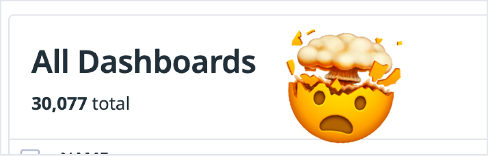
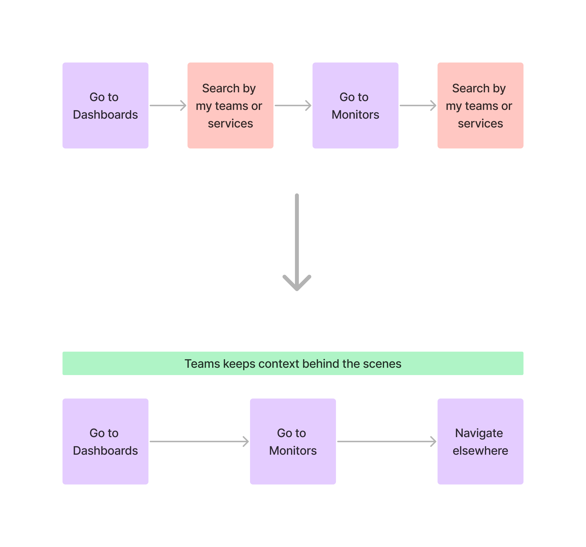
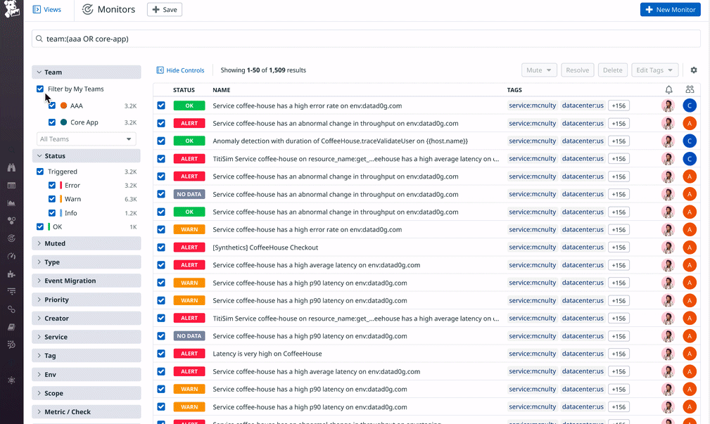
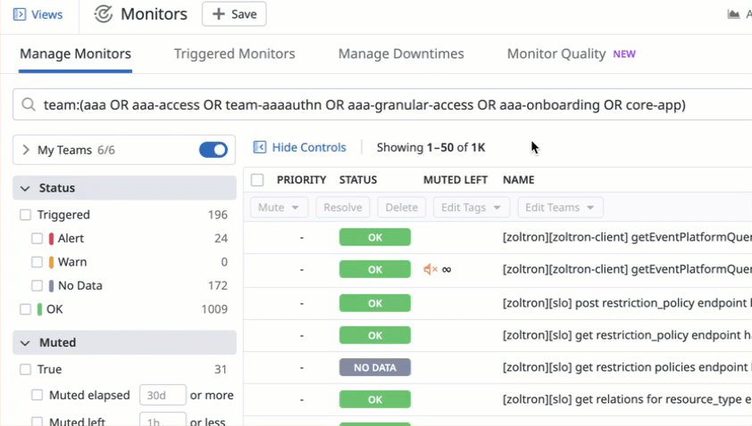

Teams for Relevancy

Problem
The Datadog experience, by default, doesn’t align with our users’ scopes of responsibility.
As a result, they’re inundated with huge lists of results.
Furthermore, users are constantly conducting the same searches across products.
How might we introduce a structure so that users only see what they need?
Explorations

One direction I worked on explored filtering content out of view, in the navigation, but I wanted to prioritize discovery and adoption since this is new functionality.
I also looked into an existing pattern we had, the Facet. But I knew I wanted the filter to save it’s state between products, and Facets do not.
The direction I chose was a consistent filter to be added across all search experiences in Datadog. It aligned with future search changes coming across the design team, was easy to implement across tons of different search experiments, and was built with components to help with rollout.
Users no longer have to type similar queries across products. Their context follows them.
I built a suite of components around Team tagging and searching and spread these across dozens of teams and features at Datadog.
Outcome
It was a huge relevancy win.
8000 organizations are using this feature, and it’s most valuable to our largest, highest priority customers.
My designs lessened the strain on other features that were being misused for relevancy hacks, such as RBAC, or creating whole new orgs just to see relevant content.
Next Steps
I’m partnering with our access and saved search teams to create the next version of this, a “context companion” which is constantly, subtly, present. It will show the user all the factors that are affecting their view, like their saved searches, their teams, and their access restrictions, bringing visibility and clarity while also simplifying the UI and eliminating the need for multiple indicators.